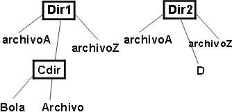
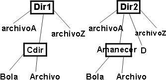

| Concepto: Catálogo de ideas de prueba |
 |
|
| Elementos relacionados |
|---|
IntroducciónBuena parte de la programación implica volver a tomar cosas ya muy utilizadas y volver a utilizarlas en un contexto distinto. Esas cosas suelen ser algunas clases o estructuras de datos (como las listas con enlaces, las tablas hash o las bases de datos relacionales) o las operaciones (como buscar, clasificar, crear archivos temporales o abrir una ventana emergente). Por ejemplo, dos bases de datos relacionales de cliente pueden tener muchas características repetidas. Lo interesante de estas repeticiones es que tienen repetidos los errores. La gente no suele inventar formas nuevas e imaginativas de insertar errores en una lista con dobles enlaces. Suelen cometer los mismos errores que ellos u otros han cometido antes. Un programador que hace que una ventana de navegador se abra puede cometer uno de estos errores habituales:
Como los errores se repiten, también se repiten las ideas de prueba que los encuentran. Ponga estas ideas de prueba en el catálogo de ideas de prueba para poder reutilizarlas. Cómo detecta errores un catálogo de ideas de pruebaUna de las virtudes de un catálogo es que una única idea de prueba puede ser útil para detectar más de un error subyacente. He aquí un ejemplo de una idea que detecta dos errores. El primer error se encontraba en un compilador C. Este compilador tomaba opciones de línea de mandatos como "-table", "-trace" o "-nolink". Las opciones pueden abreviarse en su forma exclusiva más pequeña. Por ejemplo, "-ta" es tan bueno como "-table". Sin embargo, "-t" no es aceptable porque es ambiguo: puede referirse tanto a "-table" como a "-trace". Internamente, las opciones de línea de mandatos se han almacenado en una tabla similar a ésta:
Cuando se detecta una opción en la línea de mandatos, se busca en la tabla. Se entiende que coincide si era el prefijo de alguna de las entradas de la tabla; es decir, "-t" coincida con "-table". Una vez que se ha encontrado un elemento coincidente, se busca en el resto de la tabla por si hubiese otro. Si se encuentra otro elemento coincidente, sería un error porque indicaría una ambigüedad. el código que realiza la búsqueda era así:
¿Aprecia el problema? Es sutil. El problema reside en la sentencia "break". Su propósito es romper el bucle inclusivo más exterior cuando se encuentre una coincidencia duplicada, pero lo que hace es romper el bucle interior. Esto tiene el mismo efecto que si no se encontrara una segunda coincidencia: se devuelve el índice de la primer coincidencia. Observe que este error sólo puede encontrarse si la opción de búsqueda detecta dos coincidencias en la tabla, como haría "-t". Ahora tomemos otro ejemplo de error, que es completamente distinto. Este código necesita una cadena de caracteres. En teoría, sustituye el último '=' de la cadena por un '+'. Si no hay ningún '=', no se hace nada. El código utiliza la rutina estándar de la biblioteca C strchr. El código es éste:
Este problema también es un tanto sutil. La función strchr devuelve la primera coincidencia de la cadena, no la última. la función correcta es strrchr. Es más probable que el problema sea un error tipográfico. (De hecho, el verdadero problema subyacente es que no es en absoluto recomendable colocar dos funciones en una biblioteca estándar cuando sólo se diferencian en una letra). Este error sólo puede encontrarse cuando hay dos o más signos de igual en la entrada. Es decir:
Lo que es interesante y útil en este caso es que tenemos dos errores con unas causas completamente distintas en su origen (un error tipográfico, una mala comprensión de un constructo de C) y con distintas manifestaciones en el código (invocación de una función equivocada, mala utilización de la sentencia break) que pueden detectarse mediante la misma idea de prueba (buscar si algo se produce dos veces). Un buen catálogo de ideas de prueba¿Que hace bueno un catálogo?
Con estas reglas, parece recomendable disponer de más de un catálogo. Algunos datos y operaciones son comunes a toda la programación, por lo que las ideas de prueba pueden ponerse en un catálogo que utilicen todos los programadores. Otras son específicas de un dominio determinado, por lo que las ideas de prueba pueden ponerse en un catálogo de ideas de prueba específicas del dominio. El catálogo de muestra (obtenga Adobe Reader) que se utiliza en el ejemplo siguiente es un buen principio. Las Ideas de pruebas para combinaciones de AND y OR son otro ejemplo. Ejemplo de utilización de un catálogo de ideas de pruebaPuede utilizar el catálogo de muestra como se indica a continuación. Suponga que está implementado este método:
applyToCommonFiles toma dos directorios como argumentos. Cuando un archivo del primer directorio tiene el mismo nombre que un archivo del segundo, applyToCommonFiles realiza una operación en ese par de archivos. Desciende subdirectorios. El método para utilizar el catálogo es explorarlo en busca de títulos que coincidan con esa situación. Considere las ideas de prueba bajo cada título para ver si son o no relevantes y, a continuación, escriba las que lo sean en una lista de ideas de prueba. Nota: esta descripción por pasos puede dar la impresión de que la utilización del catálogo es una tarea laboriosa. Se tarda más en leer acerca de la creación de la lista de comprobación de lo que se tarda en crear una en la práctica. Por tanto, en el caso de applyToCommonFiles, puede aplicar el catálogo de la forma que se describe en el resto de esta sección. El primera entrada es para cualquier objeto. ¿Puede alguno de los argumentos ser un puntero nulo? Esto es cosa del contrato entre applyToCommonFiles. El contrato puede ser que los llamadores no pasarán ningún puntero nulo. Si lo hacen, no puede confiarse en el comportamiento previsto: applyToCommonFiles podría realizar una acción cualquiera. En tal caso, ninguna prueba será adecuada, porque nada de los que haga applyToCommonFiles puede estar mal. Sin embargo, si applyToCommonFiles debe comprobar la presencia de punteros nulos, la idea de prueba puede ser útil. Asumamos el segundo caso, que nos proporciona esta lista de ideas de prueba para empezar:
La siguiente entrada del catálogo es Cadenas. Los nombres de los archivos son cadenas y se comparan para ver si coinciden. La idea de realizar pruebas con la cadena vacía ("") no parece útil. Es probable que se utilice alguna rutina de comparación de cadenas estándar, y que manejen las cadenas vacías correctamente. Pero, un momento... Si se comparan cadenas, ¿qué sucede con las mayúsculas y minúsculas? Imaginemos que d1 contiene un archivo llamado "Archivo". d2 también contiene un archivo llamado "archivo". ¿Deben coincidir ambos archivos? En UNIX, es obvio que no. En Microsoft® Windows®, casi con toda certeza deberían hacerlo. Esta es otra idea de prueba:
Observe que esta idea de prueba no procede directamente del catálogo. No obstante, el catálogo ha ha dirigido nuestra atención hacia un aspecto concreto del programa (los nombres de archivo en tanteo que cadenas) y nuestra creatividad nos ha proporcionado una idea adicional. Es importante no utilizar el catálogo de forma restrictiva, sino como técnica de "brainstorming", como una forma de inspirar nuevas ideas. La entrada siguiente es recopilaciones. Un directorio es una recopilación de archivos. Muchos programas que manejan recopilaciones producen errores en el manejo de recopilaciones vacías. Unos pocos que manejan adecuadamente la recopilación vacía o las recopilaciones con muchos elementos, producen errores en las recopilaciones que contienen exactamente un elemento. Por ello, estas ideas son útiles:
La idea siguiente es la de utilizar una recopilación del máximo tamaño posible. applyToCommonFiles se utilizaría normalmente en directorios pequeños. Posteriormente algún usuario las aplica a dos árboles de directorios de gran tamaño que contienen miles de archivos y descubre que el programa gestiona la memoria de forma extraordinariamente ineficaz y no es capaz de gestionar un caso realista. De todas formas, probar el tamaño máximo absoluto de un directorio no es importante; sólo debe ser tan grande como sean las pruebas que realice el usuario. Sin embargo, debe haber alguna forma de prueba con más de tres archivos en el directorio:
la idea de prueba final (elementos duplicados) no es aplicable a los directorios de archivos. Es decir, si tiene un directorio con dos archivos que tienen el mismo nombre, tiene un problema que no tiene relación con applyToCommonFiles; el sistema de archivos está dañado. La siguiente entrada del catálogo es Buscar. Esas ideas se pueden traducir a términos de applyToCommonFiles de esta forma:
La idea de prueba final comprueba applyToCommonFiles. ¿Ofrece un retorno tan pronto encuentra la primera coincidencia? La explicación en la idea de prueba anterior da por supuesto que el programa ofrecerá la lista de archivos del directorio utilizando alguna rutina de biblioteca que lo haga, y además ordenada alfabéticamente. De lo contrario, podría ser preferible utilizar el último como el elemento coincidente. Antes de que dedique demasiado tiempo a averiguar cómo se ordenan los archivos, considere hasta qué punto colocar el elemento coincidente el último va a aumentar las probabilidades de encontrar con más facilidades los defectos. Colocar un elemento en la última posición de una recopilación es á útil si el código explícitamente pasa por la recopilación utilizando un índice. Si utiliza un repetidor, es muy poco probable que el orden tenga ninguna relevancia. Veamos una entrada más del catálogo de muestra. La entrada estructuras enlazadas nos recuerdan que lo que se compara son los árboles de directorios y no simples recopilaciones de archivos. La decisión sobre cómo realizar la prueba de applyToCommonFiles nos obliga a enfrentarnos al carácter incompleto de su descripción. Si la estructura de directorios tiene este aspecto:  Figura 1: Una estructura de directorios ¿Desciende applyToCommonFiles al directorio Cdir? Eso no parece tener mucho sentido. No puede haber ninguna coincidencia con nada del otro árbol de directorios. De hecho, parece que los archivos de los subdirectorios sólo puedan coincidir si coinciden los nombres de los subdirectorios. Es decir, supongamos que tenemos esta estructura de directorios:  Figura 2: Una segunda estructura de directorios Los archivos "Archivo" no coinciden porque están en subdirectorios distintos. Los subdirectorios deben descenderse sólo si tienen el mismo nombre en ambos lugares: d1 d2. Eso nos lleva a las siguientes ideas de prueba:
Pero eso provoca otras preguntas. ¿Debe aplicarse la operación op) a los subdirectorios que coincidan o sólo a los archivos que lo hagan? Si se aplica a los subdirectorios, debe aplicarse antes o después de descender? Esa diferencia es muy importante si, por ejemplo, la operación suprime el archivo o directorio coincidente. Entonces, ¿la operación debe poder modificar la estructura de directorios? Y más concretamente: ¿cuál es el comportamiento correcto de applyToCommonFiles si lo hace? (Esta es la misma cuestión que se da con los repetidores). Este tipo de preguntas suelen surgir cuando se lee con atención la descripción que se hace en un método sobre la creación de ideas de prueba. Pero, dejémoslas a un lado por el momento. Cualesquiera que sean las respuestas, deberá haber ideas de prueba para ellas; ideas de prueba que verifiquen si el código implementa las respuestas correctamente. Regresemos al catálogo. Todavía no hemos considerado todas sus ideas de prueba. La primera: vacío (nada en la estructura), exige un directorio vacío. Ya lo tenemos de la entrada recopilaciones. También tenemos la estructura no vacía mínima, que es un directorio con un solo elemento. Este tipo de redundancia no es infrecuente, pero es fácil pasarla por alto. ¿Y una estructura circular? Las estructuras de directorio no pueden ser circulares no puede estar dentro de uno de sus descendientes o de sí mismo... ¿o sí puede? ¿Y los accesos directos (en Windows) o los enlaces simbólicos (en UNIX)? Si hay un acceso directo en el árbol de directorios de d1 que apunta de nuevo hacia d1, ¿debe applyToCommonFiles seguir descendiendo sin parar? La respuesta puede llevarnos a una o más nuevas ideas de prueba:
Dependiendo del comportamiento correcto, puede haber más ideas de prueba que esas. Finalmente, ¿y una profundidad de más de un nivel? Algunas ideas de prueba anteriores garantizan que se verifica si se desciende un nivel de subdirectorios, pero debemos comprobar que applyToCommonFiles sigue descendiendo:
Crear y mantener su propio catálogo de ideas de pruebaComo se ha mencionado anteriormente, el catálogo genérico no contiene todas las ideas de prueba que necesita. Pero los catálogos específicos de dominio no se han publicado fuera de las empresas que los han creado. Si los desea, deberá crearlos. A continuación, se ofrecen algunos consejos.
|
© Copyright IBM Corp. 1987, 2006. Reservados todos los derechos. |